Ficha

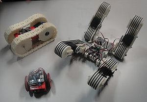
- Título: "Robots libres e imprimibles"
- Evento: Latinoware: VIII Conferencia Latino-Americana de Software Libre
- Ponente: Juan González
- Duración: 50 min
- Lugar: Parque Tecnológico Itaipu, Foz do Iguaçu, Brasil.
- Fecha: 20-Octubre-2011
Resúmen
En esta charla se presentarán los robots libres e imprimibles. Que un robot sea libre significa que están disponibles todos sus esquemas para que cualquiera los pueda utilizar, estudiar, modificar, distribuir, fabricar o vender. Esto los hace especialmente indicados para entornos educativos. "Imprimible" significa que se pueden fabricar utilizando una impresora 3D open-source. Estos robots tienen la capacidad de que se pueden compartir fácilmente por la comunidad a través de Internet. Esto hace que mejoren y evolucionen. Se presentará el robot Miniskybot, uno de los primeros robots libres e imprimibles y se analizarán los diseños derivados que han creado los estudiantes de la Escuela Politécnica Superior de la Universidad Carlos III de Madrid
Transparencias
| 2011-10-20-Latinoware-Robots-libres-imprimibles.pdf | Transparencias (PDF) |
| 2011-10-20-Latinoware-Robots-libres-imprimibles.odp | Fuentes de las transparencias para LibreOffice 3 |
| Slideshare | Transparencias en línea |
Vídeos mostrados durante la charla
- Vídeo 1: MADRE imprimiendo una pieza del robot F-track
- Vídeo 2: El robot Tritt siguiendo una línea negra
- vídeo 3: El robot Skybot siguiendo una línea negra
- Vídeo 4: Jugando con el Miniskybot
- Vídeo 5: Primera telecopia del Miniskybot
- Vídeo 6: Orugator moviéndose sobre piedas
- Vídeo 7: Orugator sobre hierba.
- Vídeo 8: Orugator intentando subir peldaños
- Vídeo 9: Unitrack subiendo una pendiente
Licencia
| |
Fotos
| Mi Album de fotos del congreso En google+ |
| Mi Album de fotos de Iguazú En google+ |
| Fotos oficiales, de Latinoware |
Durante este viaje he tenido la oportunidad de conocer a mucha gente:
| 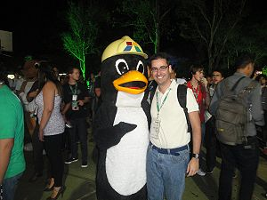 Con Tux (click para ampliar) |
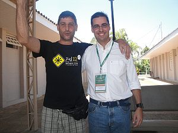 Con Ole Peter Smith, Profesor de la Universidade Federal de Goiás, Brasil (click para ampliar) |


| 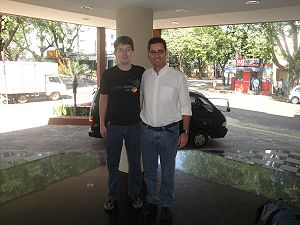 Con Alexei Vladisevs, creador de Zabbix (click para ampliar) |
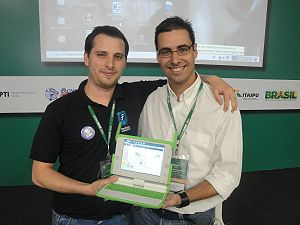 Con Valentín Basel de ICARO. Estoy sosteniendo su OLPC!! (click para ampliar) |


| 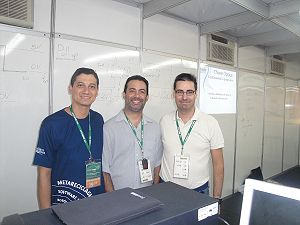 Con Danilo Rodrigues César (izquierda) y João Fernando Costa, de la revista espiriolivre (centro) (click para ampliar) |
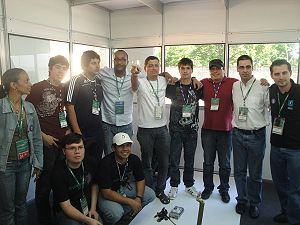 El grupo de Robótica Libre (click para ampliar) |


Y también he podido hacer turismo :-)
| 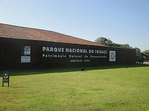 Parque Nacional do Iguazú (click para ampliar) |
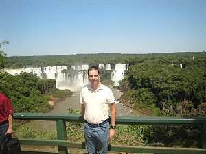 En las cataratas (click para ampliar) |


| 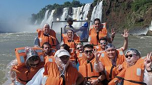 Navegando por el rio Iguazú (click para ampliar) |
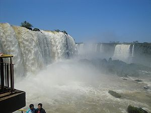 Las cataratas de cerca (click para ampliar) |


| 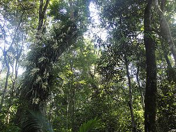 En la selva (click para ampliar) |
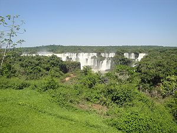 Espectaculares vistas... (click para ampliar) |


Estas fotos me las hicieron durante la charla:
| 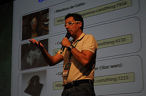 Con las gafas imprimibles puestas...(click para ampliar) |
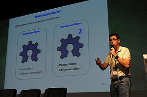 Explicando el hardware libre al cuadrado (click para ampliar) |


Artículos
|
Enlaces
- Latinoware
- RepRap: Impresoras 3D auto-replicantes
- Makerbot: Empresa Makerbot, que comercializa impresoras 3D open-source
- Thingiverse: El youtube de los objetos
- Skybot: Robot móvil educacional (Libre pero NO imprimible)
- Mini-Skybot: Robot móvil libre e imprimible
- OpenScad: Herramienta libre para diseño de piezas
- Freecad: Herramienta libre de CAD
- Objetos 3D: Objetos imprimibles
- Tarjeta Skycube
- Kicad: Herramienta libre para diseño de circuitos
- Piezas creadas en Plastic Valley UC3M!
- Orugator
- Unitrack
- ASROB: Asociación de Robótica UC3M
- Grupo de impresoras 3D de la asociación de robótica UC3M
- Proyecto Clone Wars: Clonando impresoras 3D
- UC3M Challenge - Mission: MARS
- OOML: Object Oriented Mechanics. Mecánica orientada a Objetos
Créditos
- Alberto Valero-Gomez, Andres Prieto-Moreno, Mohamed Abderrahim y Juan Gonzalez-Gomez son los autores del artículo: "A New Open Source 3D-printable Mobile Robotic Platform for Education"
- Olalla Bravo es la creadora de la rueda loca del Miniskybot 1.0 y del robot Orugator
- Daniel Gómez es el creador de la pieza para los sensores IR del Miniskybot y del robot Orugator
- Jon Goitia es el creador de los robots Unitrack y F-track
- La impresora MADRE pertenece a la Asociación de Robótica UC3M
- Santiago Morante es el creador del nombre "Plastic Valley UC3M"
Agradecimientos
- A Danilo Rodrígues César y César Brod por haberme invitado a participar en este evento. ¡Muchas gracias! :-)
Noicias
- 27/Oct/2011: Publicada la primera versión
- 26/Oct/2011: Comenzada la página